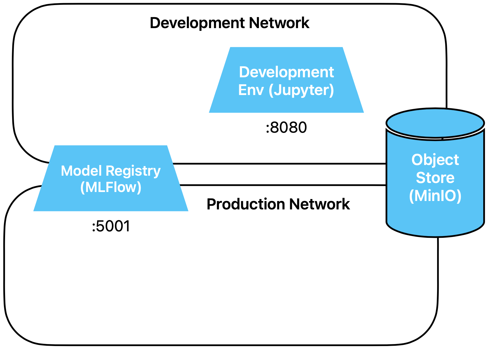

MLFlow Service
In dieser Übung setzen wir den MLFlow Dienst auf.
Vorbereitung
Diesmal gibt es nichts vorzubereiten.
Übungen
Wir erweitern unsere Infrastruktur um MLFlow, welches und Experiment Tracking, ein Deployment
API und eine Model Registry zur Verfügung stellt.
Wir hatten in der ersten Übung die beiden Docker Netzwerke development und
production definiert. In welches dieser Netze binden wir MLFlow ein?
Lösungsvorschlag
Richtig, in beide natürlich. MLFlow muss während der Entwicklung für das Logging von
Modellen verfügbar sein, und wärend dem Betrieb für den Bezug von ML Modellen aus der
Registry.
Schau dir das compose file von MLFlow an.
- Via welchen Port kannst du mit auf MLFlow zugreifen?
- Wo sind die Artefakte gespeichert?
- Wo sind die Metadaten gespeichert?
Lösungsvorschlag
Die Antwort findest du in den Direktiven command, ports und volume im compose file:
command: mlflow server --host 0.0.0.0 --port 5001 --artifacts-destination s3://artifacts --backend-store-uri sqlite:///metadata/metadata.sqlite
ports:
- 5001:5001 # 5000 is taken by airplay on macos
volumes:
- ../../mlflow_metadata:/metadata
Aktiviere und starte nun den MLFlow Dienst.
Lösungsvorschlag
Du führst dazu die folgenden fünf Schritte aus:
- Alle laufenden Notebooks speichern
- Alle Container stoppen: entweder mit ctrl-c wenn der Docker Prozess im
Vordergrund läuft oder mit docker compose down im Verzeichnis
/exercises, wo das Top-Level File docker-compose.yml liegt.
- Im top-level compose file die Zeile mit MLFlow einkommentieren:
include:
- docker_includes/networks.yml
- containers/objectstore/docker-compose.yml
- containers/development_env/docker-compose.yml
- containers/mlflow/docker-compose.yml
# - containers/message-broker/docker-compose.yml
# - containers/monitoring/docker-compose.yml
- Im compose File der Development Umgebung
(containers/development_env/docker-compose.yml) die Umgebungsvariable
MLFLOW_TRACKING_URI einkommentieren:
environment:
- FSSPEC_S3_KEY=${MINIO_ADMIN}
- FSSPEC_S3_SECRET=${MINIO_SECRET}
- FSSPEC_S3_ENDPOINT_URL=${MINIO_ENDPOINT}
- GIT_PYTHON_REFRESH=quiet
- MLFLOW_TRACKING_URI=http://model-registry:5001
- Die container mit docker-compose up oder docker-compose up -d
wieder starten (beim ersten mal dauert das wieder ein bisschen, bis das Image da
ist)
In codespaces sollte die Meldung erscheinen, dass ein neuer Port geöffnet wurde. Du kannst den
gerade gestarteten MLFlow Service (model-registry) einmal zur Kontrolle öffnen. Damit arbeiten
wirst du in der nächsten Übung.
Unsere Umgebung sieht nun so aus:

Schau dir nochmals compose file von MLFlow an. Etwas gibt es noch zu tun, kannst du
herausfinden, was?
Lösungsvorschlag
MLFlow wird im docker-compose.yml File mit dem folgenden Befehl gestartet:
command: mlflow server --host 0.0.0.0 --port 5001 --artifacts-destination s3://artifacts --backend-store-uri sqlite:///metadata/metadata.sqlite
Dieser Bucket im Object Store muss manuell erstellt werden. Alles, was darunter
liegt, erstellt und verwaltet MLFlow dann selber.
Erstelle den Bucket.
Lösungsvorschlag
import s3fs
s3fs.S3FileSystem().mkdir('/artifacts')
Du kannst nun gleich zur nächsten Übung
10_Ein_einfaches_Modell_mit_MLFlow gehen.